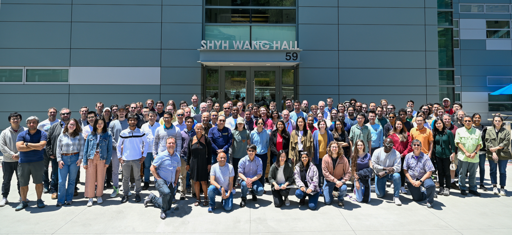

| |
| Now |
| → | At Berkeley Lab AMCR and Northwestern IEMS
|
| → | Lead an inspiring team of applied
mathematicians; computational, computer, and data scientists; and software/systems engineers
to solve some of the world's most challenging computational problems in a broad
range of scientific and engineering fields
|
| |  |
| → |
Seek rising stars to
complement Berkeley Lab's Computing Sciences team
|
| → | Develop numerical optimization and automated learning algorithms
for solving difficult science and engineering problems, especially at interfaces involving
advanced computer simulations, complex data, and physical experiments
|
| → |
Perpetually learning to develop community software:
BAND;
parMOO;
libEnsemble;
deepHyper;
NUCLEI;
POptUS;
surmise
|
| → |
Editorial responsibilities:
Mathematical Programming
Computation, INFORMS Journal on Computing,
Data Science in Science,
SIAM Review,
Journal of Optimization Theory and Applications
|
| → |
Lucky to collaborate with and promote postdocs:
|
| → |
SIAM Fellow,
Presidential Early Career Award for Scientists and Engineers (PECASE),
INFORMS Optimization Society Egon Balas Prize
|
| |
| Earlier |
| ← |
Editorial boards:
SIAM Journal on Scientific Computing (Assoc. Editor, 2016-2021),
Pacific Journal of Optimization (Assoc. Editor, 2016-2021),
Operations Research
(Assoc. Editor, 2015-2019),
SIAG/OPT Views and News
(Co-Editor, 2014-2019)
|
| ← |
Director, Laboratory for Applied Mathematics,
Numerical Software, and Statistics (LANS); Deputy Director, Mathematics
and Computer Science Division, 2017-2022
|
| ← |
Computational Mathematician at Argonne National Laboratory: Assistant 2010-2014, Full 2014-2020, Senior 2020-2022
|
| ← |
Fellow in the Computation Institute at the University of Chicago, 2010-2016
|
| ← |
Argonne Director's Postdoctoral Fellow at Argonne, 2008-2010
|
| ← |
DOE Computational Science Graduate Fellow (CSGF),
2005-2008
|
| ← |
PhD & MS,
Operations Research,
Cornell University, January 2009
|
| ← |
MS & BS, Applied Mathematics,
University of Colorado, Boulder, May 2003
|
| |
| Find out more |
| ¤ |
Check out the talented postdocs of AMCR at Berkeley Lab
|
| ¤ |
Grateful for support from
DOE ASCR,
DOE BES,
DOE HEP,
NSF CISE/OAC,
NSF MPS/DMS
|
| ¤ |
Publications:
OSTI

|